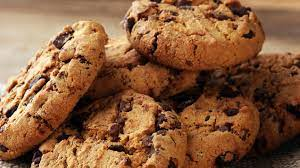

Amerikaanse cookies
Quatre quart
Pannenkoeken
Amerikaanse cookies

Ingrediënten
150 g bloem
100 g chocoladeschilfers
50 g suiker
50 g boter
1 ei
1 zakje vanillesuiker
1 koffielepel gist
Snuifje zout
Bereiding
- Verwarm jouw oven op 180°C, programma hete lucht.
- Klop de suiker, de vanillesuiker, ei en gesmolte boter samen in een homogeen mengsel.
- Voeg de bloem, de gist en het snuifje zout aan jouw mengsel.
- Voeg er ten laatste jouw chocoladeschuifjes toe.
- Maak kleine balletjes van jouw deeg en leg ze op een ovenplaat, voorafgaande bedekt met bakpapier.
- Bak jouw cookies gedurende 10-12 minuten aan 180°C.